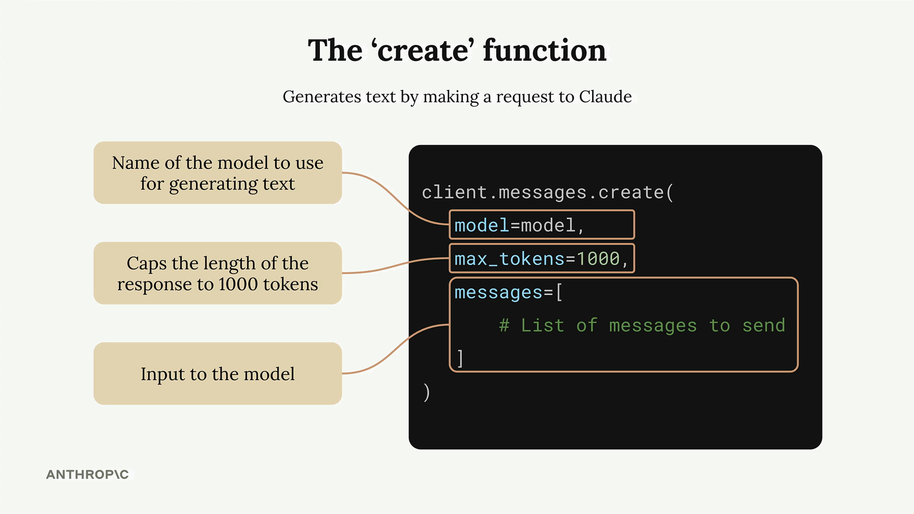
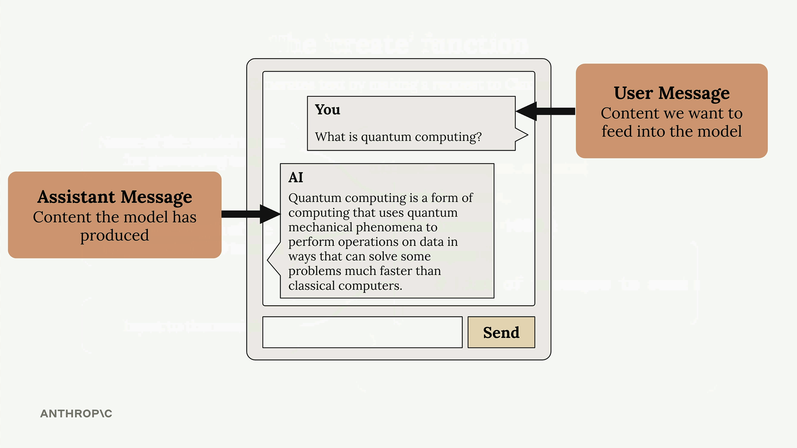

요청하기
Anthropic API에 첫 번째 요청을 보내는 것은 기본 설정과 구조를 이해하면 어렵지 않습니다. 이 가이드에서는 Python을 사용하여 Claude가 프롬프트에 응답하도록 하는 필수 단계를 안내합니다.
환경 설정
API를 호출하기 전에 필요한 패키지를 설치하고 API 키를 안전하게 구성해야 합니다.
먼저 Jupyter 노트북에 필요한 의존성을 설치하세요:
%pip install anthropic python-dotenv
다음으로, API 키를 안전하게 저장하기 위해 노트북과 같은 디렉터리에 .env 파일을 만드세요:
ANTHROPIC_API_KEY="your-api-key-here"
이 방법을 사용하면 API 키가 코드에 포함되지 않으며, 실수로 버전 관리에 커밋되는 것을 방지할 수 있습니다. 항상 .env를 .gitignore 파일에 추가하세요.
환경 변수를 불러오고 API 클라이언트를 생성하세요:
from dotenv import load_dotenv
load_dotenv()
from anthropic import Anthropic
client = Anthropic()
model = "claude-sonnet-4-0"Create 함수
API 요청의 핵심은 client.messages.create() 함수입니다. 이 함수에는 세 가지 주요 매개변수가 필요합니다:

- model - 사용하려는 Claude 모델의 이름
- max_tokens - 응답 길이의 안전 한도 (목표값이 아님)
- messages - Claude에 전송하는 대화 기록
max_tokens 매개변수는 안전 장치 역할을 합니다. 1000으로 설정하면 Claude는 할 말이 더 있더라도 1000 토큰 이후에는 생성을 중단합니다. Claude는 이 한도에 도달하려 하지 않고, 적절하다고 판단한 내용을 작성한 뒤 최대값에 도달하면 멈춥니다.
메시지 이해하기
메시지는 채팅 애플리케이션처럼 여러분과 Claude 사이의 대화를 나타냅니다. 메시지에는 두 가지 유형이 있습니다:

- 사용자 메시지 - Claude에 전송하려는 내용 (사람이 작성)
- 어시스턴트 메시지 - Claude가 생성한 응답
각 메시지는 role("user" 또는 "assistant")과 content(실제 텍스트)로 구성된 딕셔너리입니다.
첫 번째 요청 보내기
다음은 Claude에 요청을 보내는 완전한 예시입니다:
message = client.messages.create(
model=model,
max_tokens=1000,
messages=[
{
"role": "user",
"content": "What is quantum computing? Answer in one sentence"
}
]
)이 코드를 실행하면 Claude가 요청을 처리하고 생성된 텍스트와 요청에 대한 메타데이터를 포함하는 응답 객체를 반환합니다.
응답 추출하기
응답 객체에는 많은 정보가 포함되어 있지만, 일반적으로 생성된 텍스트만 필요합니다. 다음과 같이 접근하세요:
message.content[0].text이렇게 하면 다음과 같이 깔끔하고 읽기 쉬운 출력을 얻을 수 있습니다: "양자 컴퓨팅은 중첩과 얽힘 같은 양자 역학 원리를 활용하여 양자 비트(큐비트)로 정보를 처리하는 계산 방식으로, 특정 복잡한 문제를 기존 컴퓨터보다 지수적으로 빠르게 해결할 수 있습니다."
이러한 기본 사항을 바탕으로 다양한 프롬프트를 실험하고 Claude와 더 복잡한 상호작용을 구축할 수 있습니다.